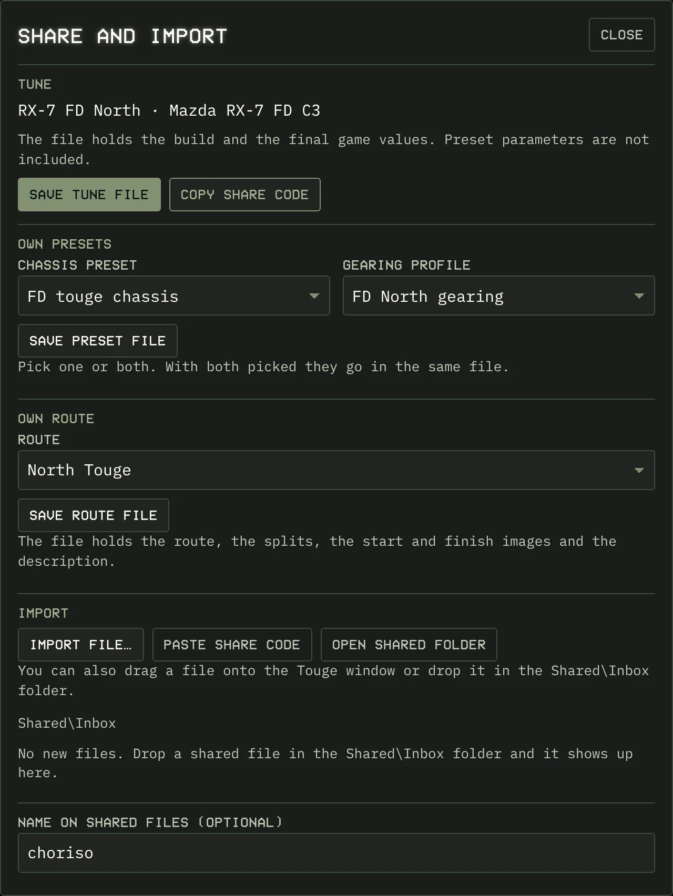
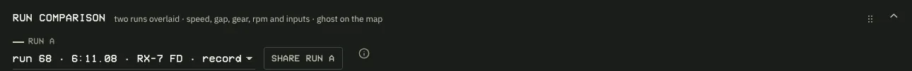
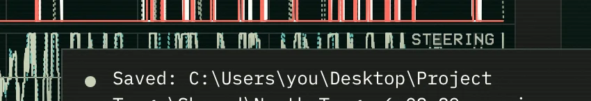
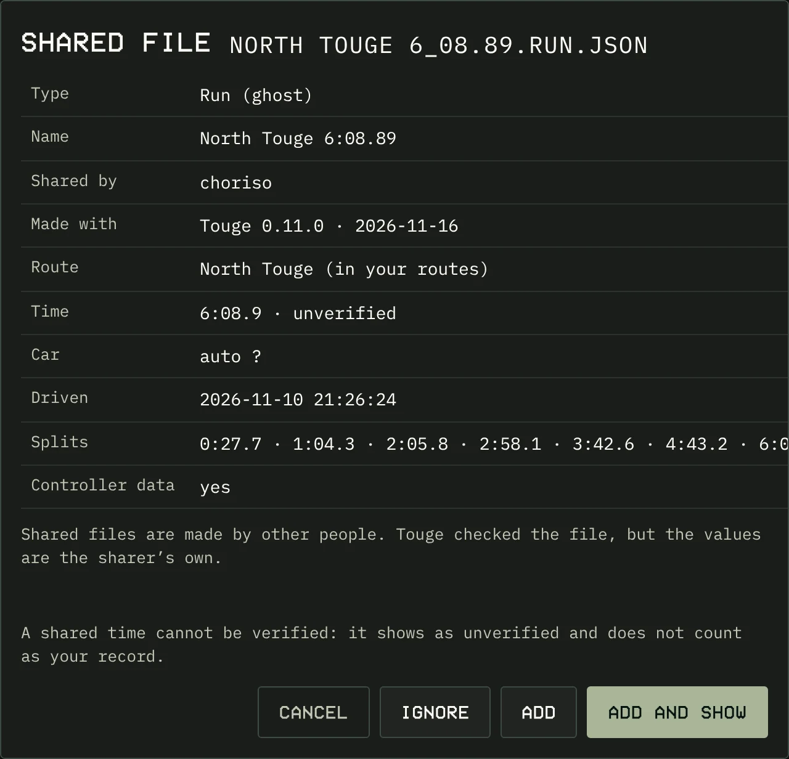
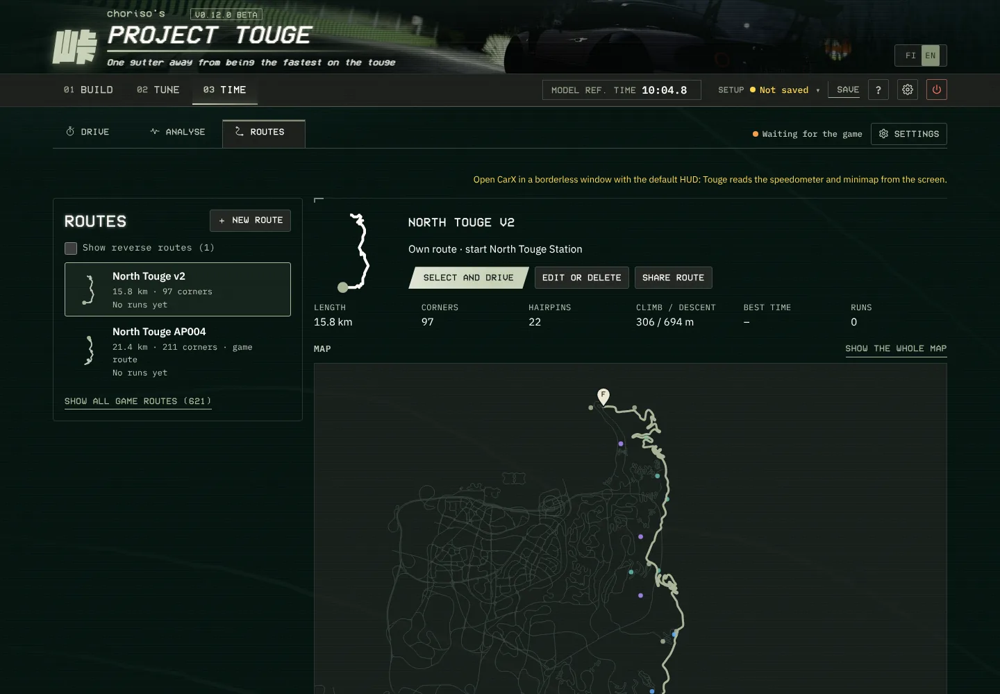
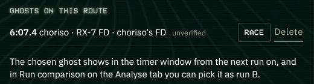

<title>Sharing in Project Touge</title>
<meta name="claude:viewport-fit-sides" content="cover">
<meta name="description" content="How to share tunes, presets, routes and runs in Project Touge 0.11, and how to race a friend's run as a ghost.">
<link rel="icon" type="image/png" href="assets/touge-64.png">
<style>
@font-face{font-family:"VCR OSD Mono";src:url(assets/VCR-OSD-Mono.woff2) format("woff2");font-display:swap}
@font-face{font-family:"IBM Plex Mono";font-weight:400;src:url(assets/ibm-plex-mono-400-latin.woff2) format("woff2");font-display:swap}
@font-face{font-family:"IBM Plex Mono";font-weight:500;src:url(assets/ibm-plex-mono-500-latin.woff2) format("woff2");font-display:swap}
@font-face{font-family:"IBM Plex Mono";font-weight:600;src:url(assets/ibm-plex-mono-600-latin.woff2) format("woff2");font-display:swap}
@font-face{font-family:"Dela Gothic One";src:url(assets/dela-gothic-one-400-osajoukko.woff2) format("woff2");font-display:swap}

/* Layout: one reading column; a three-stop flow strip (you → file → friend) up top, then three numbered tracks:
   send, receive, race. Project Touge's own night-touge palette, deliberately dark only. */
:root{
  --yo:#03120e; --hiili:#1a1d1a; --hiili-2:#212521; --metsa:#26413c;
  --viiva:#2a312c; --viiva-2:#3d4a43;
  --kerma:#fffdf7; --sumu:#c3c8b6; --himmea:#9aa58b;
  --korostus:#839073; --korostus-hi:#a9b597; --korostus-kirkas:#c9d2b8;
  --keltainen:#ffd84a; --natrium:#fb9f44;
  --display:"VCR OSD Mono","IBM Plex Mono",ui-monospace,monospace;
  --body:"IBM Plex Mono",ui-monospace,SFMono-Regular,Menlo,Consolas,monospace;
  color-scheme:dark;
}
*{box-sizing:border-box}
html{scroll-behavior:smooth}
@media (prefers-reduced-motion:reduce){html{scroll-behavior:auto}}
body{margin:0;background:var(--yo);color:var(--kerma);font:400 15px/1.65 var(--body);-webkit-font-smoothing:antialiased}
body::after{content:"";position:fixed;inset:0;pointer-events:none;z-index:50;
  background:repeating-linear-gradient(to bottom,rgba(0,0,0,0) 0 2px,rgba(0,0,0,.12) 2px 3px)}
a{color:var(--korostus-kirkas);text-underline-offset:3px}
a:hover{color:var(--kerma)}
a:focus-visible{outline:2px solid var(--korostus-hi);outline-offset:2px}
.in{max-width:1040px;margin:0 auto;padding-left:max(16px,env(safe-area-inset-left,0px));padding-right:max(16px,env(safe-area-inset-right,0px))}

/* hero */
.hero{position:relative;overflow:hidden;border-bottom:1px solid var(--viiva-2)}
.hero::before{content:"";position:absolute;inset:0;background:url(assets/hero.webp) center 58%/cover no-repeat;filter:saturate(.6) brightness(.7)}
.hero::after{content:"";position:absolute;inset:0;background:
  linear-gradient(90deg,rgba(3,18,14,.97) 0%,rgba(3,18,14,.8) 50%,rgba(3,18,14,.3) 100%),
  linear-gradient(0deg,var(--yo) 0%,rgba(3,18,14,0) 60%)}
.hero .in{position:relative;z-index:1;padding-block:44px 34px}
.brand{display:flex;align-items:center;gap:16px}
.kanji{font-family:"Dela Gothic One",serif;font-size:56px;line-height:1;color:var(--korostus-kirkas);transform:skewX(-8deg);text-shadow:0 0 18px rgba(201,210,184,.45)}
.brand small{display:block;font-family:var(--display);font-size:14px;color:var(--korostus-hi);letter-spacing:.04em}
.brand b{display:block;font:400 30px/1 var(--display);font-style:italic;letter-spacing:.04em;text-transform:uppercase}
h1{font:400 clamp(30px,6vw,52px)/1.05 var(--display);letter-spacing:.03em;text-transform:uppercase;margin:30px 0 10px;text-wrap:balance}
h1 em{font-style:normal;color:var(--korostus-kirkas)}
.lead{max-width:62ch;color:var(--sumu);margin:0;font-size:16px}
.stamp{display:inline-block;margin-top:18px;font:400 13px var(--display);letter-spacing:.08em;color:var(--korostus-hi);border:1px solid var(--viiva-2);padding:3px 8px}

/* flow strip */
.flow{display:grid;grid-template-columns:1fr auto 1.2fr auto 1fr;align-items:stretch;gap:0;margin:34px 0 8px}
.stop{border:1px solid var(--viiva-2);background:var(--hiili);padding:16px 18px;min-width:0}
.stop h3{font:400 13px var(--display);letter-spacing:.14em;text-transform:uppercase;color:var(--himmea);margin:0 0 6px}
.stop p{margin:0;color:var(--sumu);font-size:14px}
.stop code{display:inline-block;margin-top:6px}
.stop.mid{background:var(--metsa);border-color:var(--korostus)}
.arrow{display:flex;align-items:center;justify-content:center;padding:0 10px;color:var(--korostus-hi);font:400 22px var(--display)}
@media (max-width:760px){.flow{grid-template-columns:1fr}.arrow{padding:6px 0;transform:rotate(90deg)}}

/* file types */
.types{display:grid;grid-template-columns:repeat(auto-fit,minmax(220px,1fr));gap:12px;margin:26px 0 0}
.type{border:1px solid var(--viiva);padding:14px 16px;background:var(--hiili-2);display:flex;flex-direction:column;gap:6px;min-width:0}
.type .ext{font:500 13px var(--body);color:var(--keltainen);word-break:break-all}
.type b{font:400 16px var(--display);letter-spacing:.06em;text-transform:uppercase;font-weight:400}
.type span{color:var(--sumu);font-size:13.5px}
.type small{color:var(--himmea);font-size:12.5px;margin-top:auto;padding-top:6px;border-top:1px dashed var(--viiva-2)}

/* sections */
section.track{padding-block:46px 10px;border-top:1px solid var(--viiva);margin-top:46px}
.track-h{display:flex;align-items:baseline;gap:14px;margin:0 0 6px}
.track-h .no{font:400 14px var(--display);color:var(--yo);background:var(--korostus);padding:3px 8px 2px;letter-spacing:.06em}
h2{font:400 clamp(22px,3.6vw,30px)/1.15 var(--display);letter-spacing:.04em;text-transform:uppercase;margin:0;text-wrap:balance}
.sub{color:var(--himmea);margin:0 0 22px;max-width:64ch}
h3.step-h{font:400 17px var(--display);letter-spacing:.06em;text-transform:uppercase;color:var(--korostus-kirkas);margin:34px 0 12px}
p{max-width:68ch;color:var(--sumu);margin:0 0 12px}
b,strong{color:var(--kerma);font-weight:600}
code{font:500 13px var(--body);background:var(--hiili-2);border:1px solid var(--viiva);padding:1px 5px;color:var(--korostus-kirkas);overflow-wrap:anywhere}
kbd{font:400 12px var(--display);border:1px solid var(--viiva-2);padding:1px 6px;color:var(--kerma);letter-spacing:.06em;text-transform:uppercase;white-space:nowrap}

/* step rows: text left, shot right */
.step{display:grid;grid-template-columns:minmax(0,1fr) minmax(0,1.25fr);gap:28px;align-items:start;margin:18px 0 26px}
.step.wide{grid-template-columns:1fr}
.step ol,.step ul{margin:0;padding-left:22px;color:var(--sumu)}
.step li{margin:6px 0}
.step ol li::marker{font-family:var(--display);color:var(--korostus-hi)}
.step ul li::marker{color:var(--korostus)}
@media (max-width:820px){.step{grid-template-columns:1fr}}
figure{margin:0;min-width:0}
.shot{display:inline-block;max-width:100%;border:1px solid var(--viiva-2);background:var(--hiili);position:relative}
.shot::before,.shot::after{content:"";position:absolute;width:12px;height:12px;border:1px solid var(--korostus-hi);pointer-events:none}
.shot::before{top:-4px;left:-4px;border-right:0;border-bottom:0}
.shot::after{bottom:-4px;right:-4px;border-left:0;border-top:0}
.shot img{display:block;max-width:100%;height:auto}
.shot.s img{width:420px}
.shot.m img{width:560px}
figcaption{font:400 12px var(--display);letter-spacing:.12em;text-transform:uppercase;color:var(--himmea);margin-top:9px}

/* three ways in */
.ways{display:grid;grid-template-columns:repeat(3,minmax(0,1fr));gap:12px;margin:8px 0 24px}
.way{border:1px solid var(--viiva-2);padding:14px 16px;background:var(--hiili)}
.way b{display:block;font:400 15px var(--display);letter-spacing:.06em;text-transform:uppercase;margin-bottom:4px;font-weight:400}
.way span{color:var(--sumu);font-size:14px}
.way.best{border-color:var(--korostus);background:var(--metsa)}
.way em{font-style:normal;font:400 11px var(--display);letter-spacing:.12em;color:var(--korostus-kirkas);text-transform:uppercase}
@media (max-width:760px){.ways{grid-template-columns:1fr}}

/* folder tree */
.tree{font:400 14px/1.75 var(--body);background:var(--hiili);border:1px solid var(--viiva-2);padding:16px 18px;overflow-x:auto;color:var(--sumu);white-space:pre;margin:0}
.tree b{color:var(--kerma);font-weight:500}
.tree i{font-style:normal;color:var(--himmea)}
.tree .y{color:var(--keltainen)}

/* rules */
.rules{display:grid;grid-template-columns:repeat(auto-fit,minmax(260px,1fr));gap:12px;margin:10px 0 0}
.rule{border-left:2px solid var(--natrium);padding:6px 0 6px 14px}
.rule b{display:block;font-weight:600}
.rule span{color:var(--sumu);font-size:14px}
footer{border-top:1px solid var(--viiva);margin-top:56px;padding-block:22px 40px;color:var(--himmea);font-size:13px}
</style>

<header class="hero">
  <div class="in">
    <div class="brand"><span class="kanji" aria-hidden="true">峠</span><div><small>choriso's</small><b>Project Touge</b></div></div>
    <h1>Share your <em>tune</em>, your <em>route</em> and your <em>run</em></h1>
    <p class="lead">Touge saves what you made as a small file. You send the file however you like, your friend opens it in their own Touge, and a shared run becomes a ghost they can race.</p>
    <span class="stamp">v0.11 BETA</span>

    <div class="flow" aria-label="How a shared file travels">
      <div class="stop"><h3>You</h3><p><b>Save</b> a tune, preset, route or run. It lands in the <code>Shared</code> folder.</p></div>
      <div class="arrow" aria-hidden="true">→</div>
      <div class="stop mid"><h3>The file</h3><p>Send it any way you like: Discord, a chat, a USB stick. Touge uploads nothing itself.</p><code>RX-7 FD North.tune.json</code></div>
      <div class="arrow" aria-hidden="true">→</div>
      <div class="stop"><h3>Your friend</h3><p>Drops it in <code>Shared\Inbox</code>, <b>previews</b> it and clicks <b>Add</b>.</p></div>
    </div>
  </div>
</header>

<main class="in">
  <div class="types">
    <div class="type"><span class="ext">.tune.json · TOUGE1: code</span><b>Tune</b><span>The build and every final game value of a setup, so your friend types the same numbers into the game.</span><small>Setup menu → Share and import…</small></div>
    <div class="type"><span class="ext">.chassis · .gears · .preset.json</span><b>Preset</b><span>Your own chassis preset, gearing profile, or both in one file.</span><small>Setup menu → Share and import…</small></div>
    <div class="type"><span class="ext">.route.json</span><b>Route</b><span>An own route with its splits, start and finish images and description.</span><small>Share and import…, or Time → Routes → Share route</small></div>
    <div class="type"><span class="ext">.run.json</span><b>Run · ghost</b><span>One run that reached the finish, for your friend to race and compare against.</span><small>Time → Analyse → Run comparison → Share run A</small></div>
  </div>

  <section class="track" id="send">
    <div class="track-h"><span class="no">01</span><h2>Send</h2></div>
    <p class="sub">Everything you save goes to the <code>Shared</code> folder next to Project Touge.exe.</p>

    <h3 class="step-h">A tune or a preset</h3>
    <div class="step">
      <ol>
        <li>Open the setup you want to share.</li>
        <li>Click <b>Setup</b> at the top right and choose <b>Share and import…</b></li>
        <li>Optional: type your name under <b>Name on shared files</b>. Your friend sees it on the file.</li>
        <li>Click <kbd>Save tune file</kbd>. Touge tells you where it went, for example <code>Shared\RX-7 FD North.tune.json</code>.</li>
        <li>Or click <kbd>Copy share code</kbd> and paste the <code>TOUGE1:</code> line straight into a chat message.</li>
        <li>For presets, pick a chassis preset, a gearing profile or both and click <kbd>Save preset file</kbd>.</li>
        <li><kbd>Open Shared folder</kbd> opens the folder, so you can drag the file into a message.</li>
      </ol>
      <figure><span class="shot s"></span><figcaption>Setup menu</figcaption></figure>
    </div>
    <div class="step">
      <div>
        <p>The tune holds the build and the final values you type into the game, including changes you have not saved yet. A ready-made preset's parameters are not included, so your friend sees exactly your numbers. The diff travels inside the tune.</p>
      </div>
      <figure><span class="shot m"></span><figcaption>Share and import</figcaption></figure>
    </div>

    <h3 class="step-h">A route</h3>
    <div class="step wide">
      <p>Pick the route under <b>Own route</b> and click <kbd>Save route file</kbd>, or open <b>Time → Routes</b>, choose the route and click <kbd>Share route</kbd>. The six routes that come with Touge count as own routes too.</p>
    </div>

    <h3 class="step-h">A run, to race as a ghost</h3>
    <div class="step wide">
      <ol>
        <li>Open <b>Time → Analyse</b> on the route and open <b>Run comparison</b>.</li>
        <li>Choose the run you want to share as <b>Run A</b>, for example your record.</li>
        <li>Click <kbd>Share run A</kbd>. Touge saves <code>Shared\&lt;route&gt; &lt;time&gt;.run.json</code>.</li>
      </ol>
      <figure><span class="shot"></span></figure>
      <figure><span class="shot s"></span></figure>
      <p>Only runs that reached the finish on an own route can be shared. Your friend needs the same route. If it is one of the six included routes they already have it; otherwise send the route file along with the run.</p>
    </div>
  </section>

  <section class="track" id="receive">
    <div class="track-h"><span class="no">02</span><h2>Receive</h2></div>
    <p class="sub">Three ways in. They all end in the same preview, where you decide.</p>

    <div class="ways">
      <div class="way best"><em>Easiest</em><b>Drop in Shared\Inbox</b><span>Save the file in the <code>Shared\Inbox</code> folder. Touge notices it within a few seconds and shows <b>Review</b>.</span></div>
      <div class="way"><b>Drag onto Touge</b><span>Drag the file from Discord or your Downloads folder onto the Touge window.</span></div>
      <div class="way"><b>Import or paste</b><span><kbd>Import file…</kbd> in Share and import…, or <kbd>Paste share code</kbd> for a <code>TOUGE1:</code> line.</span></div>
    </div>

    <div class="step">
      <div>
        <p>When a file lands in the Inbox, Touge says so. <kbd>Review</kbd> opens <b>Share and import…</b> with the waiting files listed. Click <kbd>Preview</kbd> on one.</p>
        <figure><span class="shot s"></span></figure>
      </div>
      <figure><span class="shot m"></span><figcaption>Shared\Inbox</figcaption></figure>
    </div>

    <div class="step">
      <div>
        <p>The preview shows what the file is, who shared it and with which Touge version. Touge has checked the file, but the values are the sharer's own.</p>
        <ul>
          <li><kbd>Add</kbd> adds it. <kbd>Add and open</kbd> or <kbd>Add and show</kbd> also takes you there.</li>
          <li><kbd>Ignore</kbd> puts it aside without adding. <kbd>Cancel</kbd> leaves it in the Inbox for later.</li>
          <li>Added and ignored files move to <code>Inbox\Imported</code> and <code>Inbox\Ignored</code>.</li>
        </ul>
        <p style="margin-top:14px">A <b>tune</b> goes to your setups. When it opens, Touge checks its own numbers against the file and says <b>The imported tune matches the sharer's game values</b>, or lists what it calculates differently. If your open build is unsaved, Touge asks first.</p>
        <p>A <b>preset</b> goes to your own chassis presets and gearing profiles.</p>
      </div>
      <figure><span class="shot m"></span><figcaption>Preview of a tune</figcaption></figure>
    </div>
  </section>

  <section class="track" id="race">
    <div class="track-h"><span class="no">03</span><h2>Race the ghost</h2></div>
    <p class="sub">Route first, then the run. The run finds its route by the shape of the road, not by its name.</p>

    <div class="step">
      <div>
        <ol>
          <li>Preview the <b>route</b> file and click <kbd>Add and show</kbd>. A route you already have is recognised, even under another name, and is not added twice.</li>
          <li>Preview the <b>run</b>. Its <b>Route</b> line should say <i>in your routes</i>. If it says <i>not in your routes</i>, import the route first.</li>
          <li>Click <kbd>Add and show</kbd>. The ghost is saved in <code>Runs\Ghosts</code> and listed under <b>Ghosts</b> on the route.</li>
        </ol>
      </div>
      <figure><span class="shot m"></span><figcaption>Preview of a run</figcaption></figure>
    </div>

    <div class="step wide">
      <figure><span class="shot"></span><figcaption>Time → Routes after adding the route</figcaption></figure>
    </div>

    <div class="step wide">
      <p>Click <kbd>Race</kbd> on the ghost. From your next run on, the timer window shows how far ahead or behind the ghost you are. Click again to stop racing it; <kbd>Delete</kbd> removes it.</p>
      <figure><span class="shot"></span></figure>
      <p style="margin-top:18px">After a run, open <b>Analyse → Run comparison</b> and pick the ghost as <b>Run B</b>. The gap chart and the map show where you gain and where you lose against it.</p>
      <figure><span class="shot"></span><figcaption>Your run against the ghost</figcaption></figure>
    </div>
  </section>

  <section class="track" id="folders">
    <div class="track-h"><span class="no">04</span><h2>Where the files live</h2></div>
    <p class="sub">All of it sits in the Project Touge folder, next to the exe.</p>
<pre class="tree"><b>Project Touge\</b>
├─ Project Touge.exe
├─ <b>Shared\</b>              <i>files you saved for sharing</i>
│  ├─ <span class="y">RX-7 FD North.tune.json</span>
│  ├─ <span class="y">North Touge.route.json</span>
│  ├─ <span class="y">North Touge 6_08.89.run.json</span>
│  └─ <b>Inbox\</b>             <i>drop files you receive here</i>
│     ├─ Imported\       <i>added files move here</i>
│     └─ Ignored\        <i>ignored files move here</i>
├─ <b>Runs\Ghosts\</b>         <i>ghosts you have added</i>
├─ Routes\              <i>your routes, imported ones included</i>
└─ Tunes\               <i>your setups and presets</i></pre>

    <div class="rules">
      <div class="rule"><b>Ghost times are unverified</b><span>A shared time cannot be checked, so it never counts as your record.</span></div>
      <div class="rule"><b>Route before run</b><span>A ghost needs its route in your routes. The six included routes are there already.</span></div>
      <div class="rule"><b>Files are checked</b><span>Touge validates every file before it shows the preview. Nothing in a file runs as a program.</span></div>
      <div class="rule"><b>The newest Touge reads it best</b><span>A tune for a car your Touge does not have yet cannot be added. Update and try again.</span></div>
    </div>
  </section>

  <footer>Project Touge 0.11 beta. Screenshots are from Touge 0.11 with an RX-7 FD on North Touge; your numbers will differ. Touge reads the game's screen only and never changes the game.</footer>
</main>
